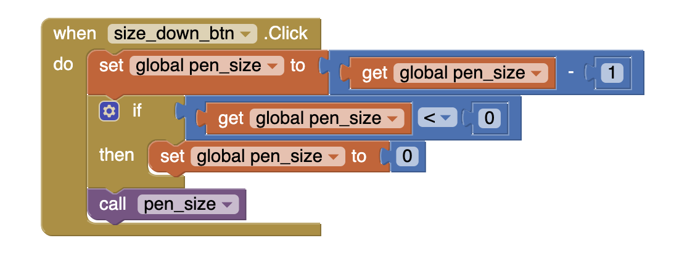

Q1. Explain the meaning of the statements shown here, both in AP CSP pseudocode and App Inventor. For example, suppose the variable X has the value 10 before the statement is executed. What value would it have after the statement is executed.
A1. The value of X would be set to the initial X value plus 1. In app inventor this would mean the value of the variable called X is being added to 1 and that value is then stored once again in the variable X. The value X after the execution of this code would be 11.
Q2. One aspect of abstraction is that it helps to reduce details to focus on what's relevant. How does the use of a variable, such as dotsize, instead of a value, such as '5', help to reduce detail and focus on what is essential in this program.
A2. It helps as you are able to view 5 as not just a number now but as a value for the size of a dot, which can then be manipulated and used.
Q1. Decode this message by converting it from binary to ASCII: 1000001 1110000 1110000 0100000 1001001 1101110 1110110 1100101 1101110 1110100 1101111 1110010 0100000 1010010 1001111 1000011 1001011 1010011 0100001 Hint: You will need to convert from binary to decimal and then from decimal to ASCII.
A1. Decimal = 65 112 112 32 73 110 118 101 110 116 111 114 32 82 79 67 75 33
ASCII = App Inventor ROCKS!
Q2. Describe what it means to say that JPEG is a lossy compression technique and whether or not it affects the quality of camera pictures.
A2. JPEG is a lossy compression technique meaning it compresses an image to save memory by compressing it's pixels, which causes it to lose it's quality permanently.
Q3. Give a specific example of a binary sequence that can represent more than one type of data -- e.g., a number, a color, a character -- and describe how to interpret its different values.
A3. ______ is an example of a binary sequence that can represent more than one type of data. The type of data changes in certain contexts, if the binary sequence is ___________-.
Q1. For enhancement #5 (the if block exercise) give a brief description of your solution to this problem. Provide a screenshot of your code -- the revised blocks -- and describe how the if/else block works to solve the problem in this case. If appropriate, include a description of any significant problems or bugs you encountered in solving this problem. App Inventor now has a Download Blocks as Image feature (right click on the white space in the blocks editor to choose) that also can be used to take a screenshot of all of your code or the Windows snipping tool can be used.
A1. My teammate and I wrote an if/else statement which compares the value of the pen size, which increments or decrements as you click the size up or size down button, to the 0. If the pen size is less than 0, then the pen size will set to 0, if not the function will continue as is. This solves the problem as the pen size will never become less than 0, as the if/else statement catches and changes it before it does.
Q2. When you use the Camera component to take a picture as the Canvas background, explain why the picture goes away when the app is restarted. HINT: Think about the different hardware components we talked about in an earlier lesson and where on the device the picture is stored. What do you think could be done to prevent the picture from disappearing when the app is restarted?
A2. The picture is stored within the RAM temporarily, thus when the app is restarted that memory is wiped and renewed. We can prevent it from erasing by instructing the app to save the data in a more permanent spot, such as in the ROM or in a database.
Q1.The Wikipedia article on refactoring talks about code smell and one motivation for engaging in refactoring. What is code smell? Describe briefly two examples of "code smell" and how refactoring would eliminate them.
A1. Code smell is a trait of a program that may indicate that the code has a problem. For example, it is too long or is too similar to another program near it. Refactoring can make the code become shorter and .
Q2. Insert a screenshot of the procedure from your app below.
A2.
Q3. What are the advantages of using procedural abstraction? Try to name at least 2 advantages.
A3.
Q1. (POGIL) Describe an algorithm for identifying the card that was flipped.
A1. Odd Parity = If there are any face up cards in a row or column that add up to an even number, add another parity card to make it odd. After the card is flipped, look for any row or column that has an even amount of cards face up: the card in the row and column with an even number of face up cards is the one that was flipped over.
Even Parity = Do the same as the odd except instead add parity cards so that the face up cards add to an even number. After a card has been flipped, check for cards in a row or column that add up to an odd number: the card that is in the row and column that has an odd number of face up cards is the one that was flipped.
Q2. (POGIL) The card "trick" shows that it is always possible to identify the card that was flipped as long as only one card was flipped. Would it be possible always to determine if an error occurred if two cards were flipped?
A2. It is possible if the cards flipped are in different row and columns, else you'd have to use the checksum method.
Q1. Explain how the error card trick from the Error Detection lesson uses a parity scheme. Was it an even or odd parity scheme?
A1. The error card trick checks the number of odd or even cards to determine whether an error has occured, making it a parity scheme. It can be either an even or odd scheme, it depends on the cards placed.
Q2. What are some of the limitations of using parity bits for error detection?
A2.
Q3. Another type of error detection is a check sum. Research what a check sum is and then describe it in your own words. Can a check sum identify where an error occurs?
A3.
Q4. (Optional) Explain in your own words the difference between error detection and error correction. Describe how the error correction process used in the video above allows the computer to fix errors.
A4.
Q1. How are lists used in this app? Why is a list a useful data abstraction or an abstract data type (ADT) in programming? Is it easy to add new destinations to the tour?
A1.
Q2. How do APIs simplify complex programming tasks? Pick an app that you use on your device (e.g. Twitter, Google Maps) and see whether it provides an API and some of the functions you can control with it. Describe your results below.
A2.
Q3. How is GPS used in this app? Do some research to find out how GPS works and describe it here in a couple sentences.
A3.
Q4. Insert screenshots of the enhancements that you made below and describe how they work.
A4.
Q1. What does it mean to say that data is 'persistent'?
A1.
Q2. What's the difference, in terms of where data is located, for data stored in a global variable vs. data stored in a database?
A2.
Q3. Include screenshots and explanations of your enhancements.
A3.
Short Answer
Q1. What is metadata? Give an example of how a piece of metadata could be used to increase the usefulness of an image or document.
A1.
Q2. What is a model?
A2.
Q3. What's the difference between a raster image and an ASCII representation of a text document?
A3.
Q4. What are filename extensions? What are they used for?
A4.
Q5. What is lossless representation? What is lossy representation? What are the trade-offs in using each representation?
A5.
Q6. What is steganography and what is it used for? Describe in your own words the steganography algorithm used in the activity.
A6.
Q7. What would you have to do to delete a document from your computer so that it could not possibly be read by anyone else?
A7.
Q8. What is free and open source software? Provide an example.
A8.
Free Response
Q1. How has retouching become a controversial issue? Give an example.
A1.
Q2. Would you rather own a camera (or camera phone) with a higher number of megapixels or lower? Explain.
A2.
Q3. Other than digital images, what might be an example of a computer model? Explain your answer based on the definition of a model.
A3.
Q4. The code that implements App Inventor is open source and its impact on education is obvious. Find another example of open source software and describe its positive impact on education, business or society.
A4.